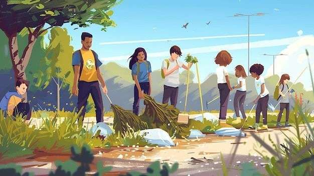
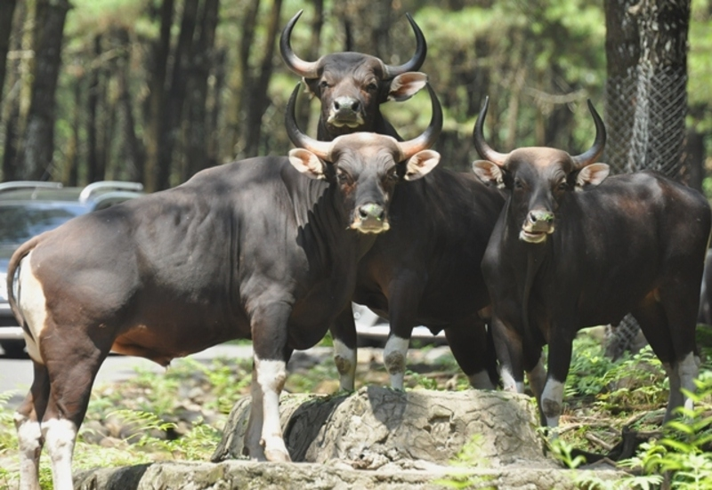

Makna Simbol Sila Ke-4
Banteng Sebagai Simbol Kebersamaan
Banteng dipilih menjadi simbol Sila ke-4 Pancasila karena sifatnya yang berkelompok dan kuat, mencerminkan semangat gotong royong, kekuatan kolektif, dan keberanian dalam mengambil keputusan untuk kepentingan bersama.


Kekuatan dan Keberanian
Banteng melambangkan kekuatan, ketegasan, dan keberanian dalam menyampaikan pendapat dengan cara yang bijaksana dan bertanggung jawab.
Demokrasi dan Perwakilan
Sila ke-4 menekankan bahwa keputusan harus diambil melalui permusyawaratan dan perwakilan, bukan pemaksaan kehendak.

“Permusyawaratan adalah jiwa bangsa Indonesia.”
— Soekarno